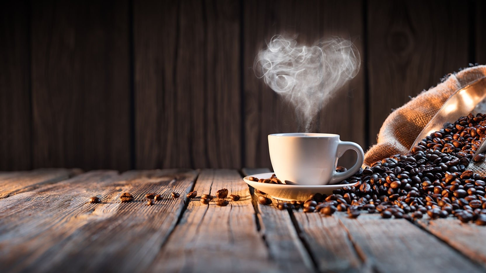

Кава — наша пристрасть
Ми обираємо лише найкращі зерна, щоб кожна чашка дарувала насолоду.
У нашій кав’ярні ви знайдете:
- аромат свіжообсмаженої кави
- сучасні методи приготування (еспресо, пуровер, френч-прес)
- натуральні добавки та сиропи
- затишну атмосферу для роботи та відпочинку